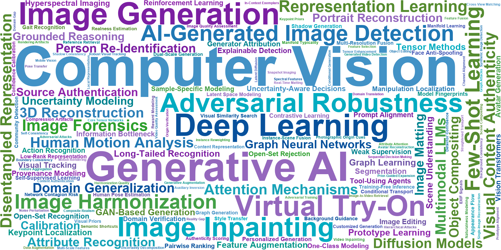
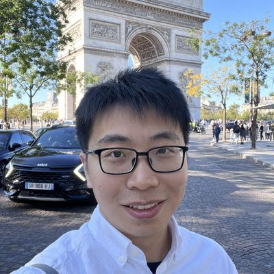

关于我
我现任上海交通大学计算机学院副教授，任职于清源研究院与机器智能研究所。我本科毕业于上海交通大学ACM班，并于上海交通大学计算机科学与工程系获得博士学位，师从张丽清教授、俞勇教授及赵启斌博士。
研究方向
我的研究兴趣包括：人工智能、计算机视觉、生成模型、可信模型。详细研究成果可参考发表论文与 实验室主页。

课程
- CS3964 图像处理与视觉
- CS7353 设计和理解深度神经网络
- CS3969 视觉内容生成
- CS3339 机器学习（强化）

我现任上海交通大学计算机学院副教授，任职于清源研究院与机器智能研究所。我本科毕业于上海交通大学ACM班，并于上海交通大学计算机科学与工程系获得博士学位，师从张丽清教授、俞勇教授及赵启斌博士。
我的研究兴趣包括：人工智能、计算机视觉、生成模型、可信模型。详细研究成果可参考发表论文与 实验室主页。
